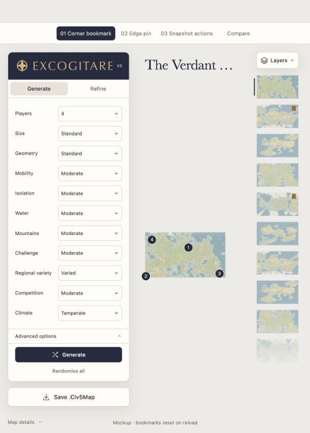
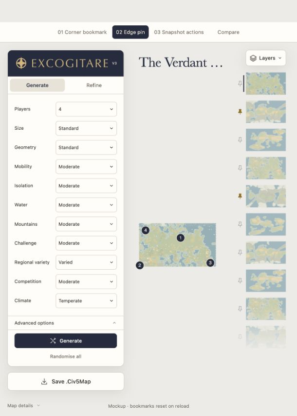
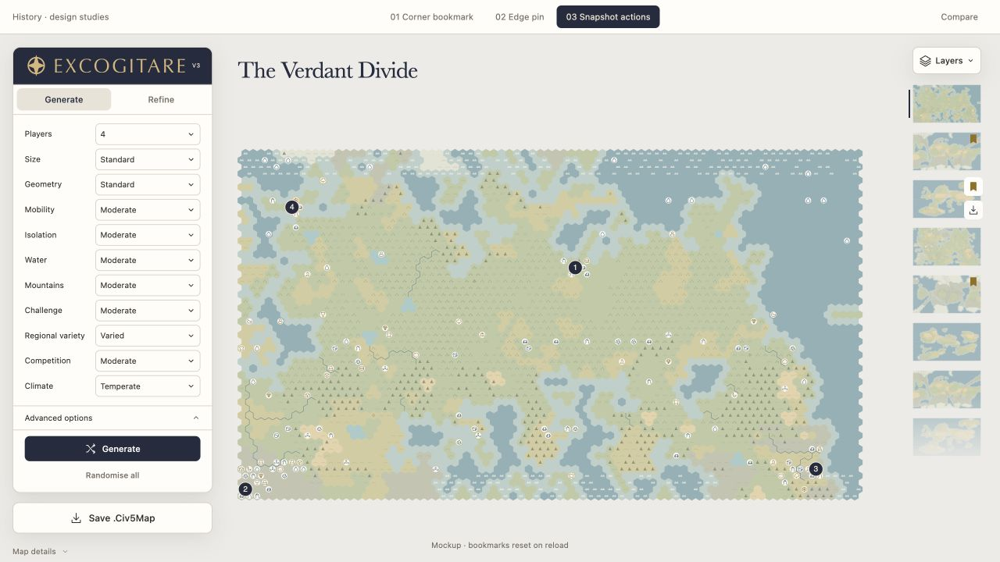

01Corner bookmark
Appears on hover or focus. A gold bookmark remains visible once saved.

Recommended · least visual weight
A small action on each snapshot. Gold means bookmarked; clicking the map still restores it.
Appears on hover or focus. A gold bookmark remains visible once saved.

Recommended · least visual weight
A quiet pin beside each thumbnail. Always available, with the map image clear.

Hover to reveal download and bookmark icons. A saved bookmark stays gold.
